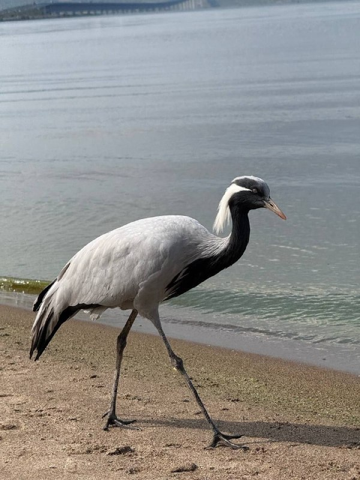

01
Общество и городская среда · событие дня
В ближайшие дни птицу планируют поймать и временно поселить в Ульяновском зоопарке. Перед этим журавля осмотрит ветеринар
О намерении забрать краснокнижную птицу в зоопарк также сообщат в Росприроднадзор. Весной красавку собираются вернуть в дикую природу — его отвезут на юг Самарской области, где проходит маршрут сезонной миграции журавлей.…